Submit the following programs via Gradescope:
- Due Date: 6 September Reading: Think CS: Chapters 1 & 2
Write a program that prints "Hello, World!" to the screen.
Hint: See the introductory lab.
- Due Date: 9 September Reading: Think CS: Chapter 4
Write a program that draws an octagon (8-sided polygon).
Note: Choose a name for your file that is not turtle.py. When executing the "import turtle" statement, the computer first looks in the folder where the file is saved for the turtle module and then in the libraries (and other places on the path). So, it thinks the module is itself, causing all kinds of errors. To avoid this, name your program something like "myTurtle.py" or "program2.py".Hint: See the introductory lab.
- Due Date: 10 September Reading: Think CS: Chapter 4
Copy the program from Section 4.3 into a file on your computer and modify the program (with turtles alex and tess) to have a blue background color and have tess draw red lines:
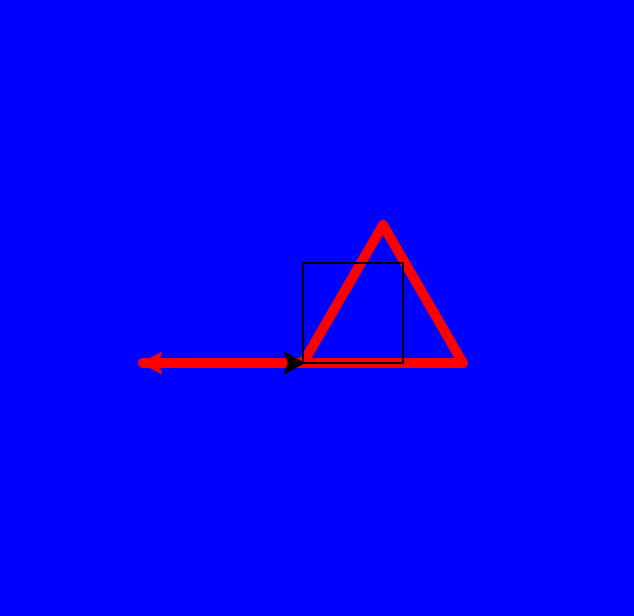
- Due Date: 11 September Reading: Think CS: Chapter 2 and
Section 4.7
Write a program that implements the pseudocode ("informal high-level description of the operating principle of a computer program or other algorithm") below:
Repeat 36 times: Walk forward 100 steps Turn left 55 degrees Walk forward 10 steps Turn left 55 degrees Walk forward 100 stepsYour output should look similar to:
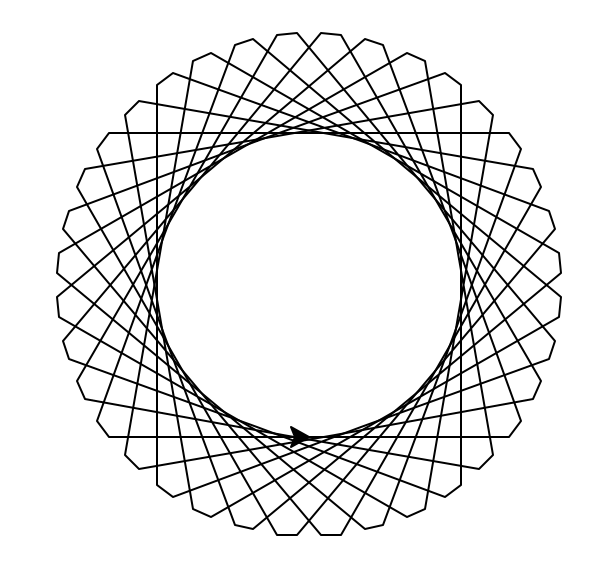 - Due Date: 12 September Reading: Think CS: Chapter 4
Write a program that will prints your name 25 times.
For example, the output of Thomas Hunter's program should be:
Thomas Hunter Thomas Hunter Thomas Hunter Thomas Hunter Thomas Hunter Thomas Hunter Thomas Hunter Thomas Hunter Thomas Hunter Thomas Hunter Thomas Hunter Thomas Hunter Thomas Hunter Thomas Hunter Thomas Hunter Thomas Hunter Thomas Hunter Thomas Hunter Thomas Hunter Thomas Hunter Thomas Hunter Thomas Hunter Thomas Hunter Thomas Hunter Thomas Hunter
Note: the grading scripts expect the name associated with your Gradescope account (down to spaces and punctuation). If you get an error that the names do not match, compare carefully the name you printed and the name on file. If your name is not correct on Gradescope, send email to hunterCSci127help AT gmail.com with the correct name.
- Due Date: 13 September Reading: Think CS: Chapter 2 and
and
Section 4.7
Write a program that prints out the numbers from 0 to 24.
The output of your program should be:
0 1 2 3 4 5 6 7 8 9 10 11 12 13 14 15 16 17 18 19 20 21 22 23 24
- Due Date: 16 September Reading: Think CS: Chapters 2 & 9
Using the string commands introduced in Lab 1, write a Python program that prompts the user for a message, and then prints the message, the message in upper case letters, and the message in lower case letters.
A sample run of your program should look like:
Enter a message: Mihi cura futuri Mihi cura futuri MIHI CURA FUTURI mihi cura futuri
Another run:
Enter a message: I love Python! I love Python! I LOVE PYTHON! i love python!
Hint: Your program should be able to take any phrase the user enters and prints it, it in upper case letters, and it in lower case letters. To do that, you need to store the phrase in a variable and print variations of the stored variable.
- Due Date: 17 September Reading: Think CS: Chapters 2 & 9
Write a program that prompts the user to enter a phrase and then prints out the ASCII code of each character in the phrase.
A sample run of your program should look like:
Enter a phrase: I love Python! In ASCII: 73 32 108 111 118 101 32 80 121 116 104 111 110 33
And another sample run:
Enter a phrase: ABC In ASCII: 65 66 67
Hint: If c is a character, ord(c) returns its ASCII code. For example, if c is 'I', then ord(c) returns 73. See Lab 1.
- Due Date: 18 September Reading: Think CS: Chapters 2 & 9

(The cipher disk above shifts 'A' to 'N', 'B' to 'O', ... 'Z' to 'M', or a shift of 13. From secretcodebreaker.com.)Write a program that prompts the user to enter a word and then prints out the word with each letter shifted right by 13. That is, 'a' becomes 'n', 'b' becomes 'o', ... 'y' becomes 'l', and 'z' becomes 'm'.
Assume that all inputted words are in lower case letters: 'a',...,'z'.
A sample run of your program should look like:
Enter a word: zebra Your word in code is: mroen
Hint: See the example programs from Lecture 2.
- Due Date: 19 September Reading: Think CS: Chapters 2 & 4
Write a program that prompts the user for a DNA string, and then prints the length and GC-content (percent of the string that is C or G, written as a decimal).
A sample run of your program should look like:
Enter a DNA string: ACGCCCGGGATG Length is 12 GC-content is 0.75
And another sample run:
Enter a DNA string: AAAAA Length is 5 GC-content is 0.0
Hint: See Lab 1.
- Due Date: 20 September
Reading: Think CS: Sections 2.7 &
9.5
Write a program that asks the user for a noun and two verbs (inspired by a Colgate University COSC 101 program). Using the words the user entered, print out a new sentence of the form:
If it VERB1 like a NOUN and VERB2 like a NOUN, it probably is a NOUN.
A sample run of the program:Enter a noun: duck Enter a verb: walks Enter another verb: talks New sentence: If it walks like a duck and talks like a duck, it probably is a duck.
Another sample run of the program:Enter a noun: cat Enter a verb: sounds Enter another verb: moves New sentence: If it sounds like a cat and moves like a cat, it probably is a cat.
Hint: Here's a way to approach the problem:
- Create a variable, template and store the string "If it VERB1 like a NOUN and VERB2 like a NOUN, it probably is a NOUN." in it.
- Ask the user for a noun and store it in a variable, noun.
- Replace the placeholder in the template with the noun the user entered (i.e. template = template.replace("NOUN", noun)).
- Ask the user for a noun and store it in a variable, verb1.
- Replace the placeholder in the template with the verb the user entered.
- Ask the user for another verb and store it in a variable, verb2.
- Replace the placeholder in the template with the second the verb the user entered.
- Print out the updated template string.
- Due Date: 23 September Reading: Think CS: Chapter 2
Modify the program from Lab 2 to show the shades of blue.
Your output should look similar to:
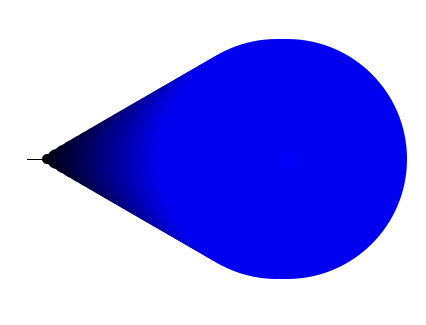 - Due Date: 24 September
Reading: Think CS: Section 8.10 &
Datacamp Numpy Tutorial
Write a program that asks the user for a name of an image .png file and the name of an output file. Your program should create a new image that has only the blue channel of the original image (that is, no green channel).
A sample run of your program should look like:
Enter name of the input file: csBridge.png Enter name of the output file: blueH.png
Sample input and resulting output files:
 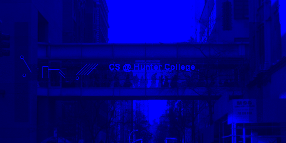
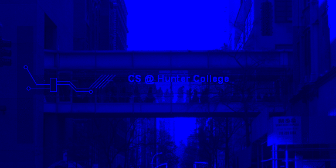
Note: before submitting your program for grading, remove the commands that show the image (i.e. the ones that pop up the graphics window with the image). The program is graded on a server on the cloud and does not have a graphics window, so, the plt.show() and plt.imshow() commands will give an error. Instead, the files your program produces are compared pixel-by-pixel to the answer to check for correctness.
Hint: See Lab 2.
- Due Date: 25 September
Reading: Think CS: Chapter 2 & Section 8.2
In Lecture 3, we wrote a program to make a Hunter logo 'H' on a 10x10 grid. Write a program that creates a 'C' logo for CUNY on a 30x30 grid.
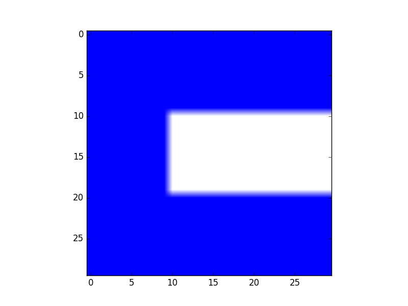
The grading script is expecting:
- The file to be saved as: logo.png.
- The grid to be 30 x 30.
- The 'C' to be 0% red, 0% green, and 100% blue. The upper part of the 'C' should be the top third of the image; the left part of the 'C' should be the left third of the image; and the lower part of the 'C' should be the the bottom third of the image.
- The remaining pixels in the image should be white (100% red, 100% green, and 100% blue).
Note: before submitting your program for grading, remove the commands that show the image (i.e. the ones that pop up the graphics window with the image). The program is graded on a server on the cloud and does not have a graphics window, so, the plt.show() and plt.imshow() commands will give an error. Instead, the files your program produces are compared pixel-by-pixel to the answer to check for correctness.
Hint: See notes from Lecture 3.
- Due Date: 26 September
Reading: Think CS: Chapters 2 & 8.10 &
Datacamp Numpy Tutorial
Modify the flood map of NYC from Lab 3 to color the region of the map with elevation greater than 6 feet and less than or equal 20 feet above sea level the color grey (50% red, 50% green, and 50% blue).
Your resulting map should look like:
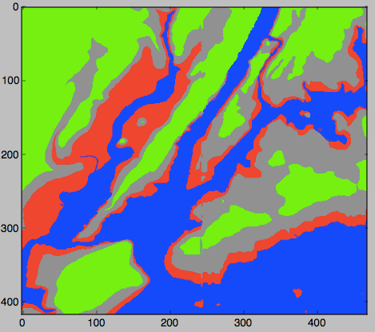
and be saved to a file called floodMap.png.
Note: before submitting your program for grading, remove the commands that show the image (i.e. the ones that pop up the graphics window with the image). The program is graded on a server on the cloud and does not have a graphics window, so, the plt.show() and plt.show() commands will give an error. Instead, the files your program produces are compared pixel-by-pixel to the answer to check for correctness.
- Due Date: 27 September Reading: Think CS: Chapter 2
Write a program that converts kilometers to miles. Your program should prompt the user for the number of kilometers and then print out the number of miles.
A useful formula: miles = 0.621371* kilometers.
See Lab 3 for designing Input-Process-Output programs.
- Due Date: 2 October Reading: Think CS: Section 2.7
Write a program that implements the pseudocode below:
1. Ask the user for the number of seconds until lecture starts. 2. Print out the hours until lecture (hours = seconds //3600). 3. Compute the remaining seconds (rem = seconds % 3600). 4. Print out the minutes until lecture (minutes = rem // 60). 5. Print out the remaining seconds (remSec = rem % 60).
A sample run of your program should look like:
Enter number of seconds: 62 Hours: 0 Minutes: 1 Seconds: 2
and another sample run:
Enter number of hours: 4000 Hours: 1 Minutes: 6 Seconds: 40
Hint: See Section 2.7.
- Due Date: 3 October Reading: Think CS: Chapter 4
Write a program that asks the user for 5 whole (integer) numbers. For each number, turn the turtle left the degrees entered and then the turtle should move forward 100.
A sample run of your program should look like:
Enter a number: 270 Enter a number: 100 Enter a number: 190 Enter a number: 200 Enter a number: 80
and the output should look similar to:

- Due Date: 4 October
Reading: Think CS: Chapters 2 & 9
Write a program that asks the user for a message and then prints the message out, three copies of one character per line.
A sample run of your program should look like:
Enter a message: I love Python! I I I l l l o o o v v v e e e P P P y y y t t t h h h o o o n n n ! ! !And another sample run:
Enter a message: Hunter H H H u u u n n n t t t e e e r r r
Note: The print() command can take multiple inputs to print at the same time. For example, print(c,c) will print the contents of variable c twice. For example, if
c is "I", then it would print: I I. Hint: See Lab 1 or Lecture 2 notes.
- Due Date: 7 October Reading: Section 10.24
Write a program that prompts the user to enter a list of names. Each person's name is separated from the next by a semi-colon and a space ('; ') and the names are entered lastName, firstName (i.e. separated by ', '). Your program should then print out the names, one per line, with the first initial of the first name, followed by ".", and followed by the last name.
A sample run of your program should look like:
Please enter your list of names: Cohn, Mildred; Dolciani, Mary P.; Rees, Mina; Teitelbaum, Ruth; Yalow, Rosalyn You entered: M. Cohn M. Dolciani M. Rees R. Teitelbaum R. Yalow Thank you for using my name organizer!Hint: See Section 10.24 for a quick overview of split(). Do this problem in parts: first, split the list by person (what should the delimiter be?). Then, split each of person's name into first and last name (what should the delimiter be here?). If you have a string str, what is s = str[0] + "."?
- Due Date: 10 October Reading: Think CS: Chapters 2 & 9
Write a program that implements the pseudocode below:
For i = 90, 88, 86, 84, 82, ... ,0: Walk forward 25 steps Turn left i degreesYour output should look similar to:
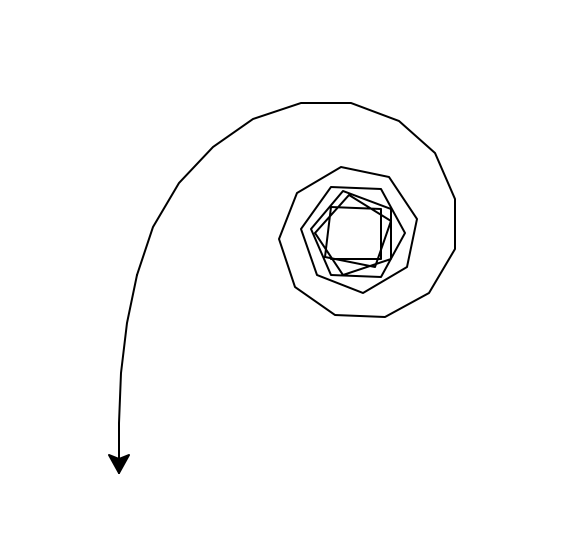Hint: See examples of range(start,stop,step) in Lecture 2 notes.
- Due Date: 11 October Reading: Think CS: Chapters 7 & 8.10 & Datacamp Numpy Tutorial
Following Lab 4, write a program that asks the user for the name of a .png file and print the number of pixels that are nearly white (the fraction of red, the fraction of green, and the fraction of blue are all above 0.75).
For example, if your file was of the snow pack in the Sierra Nevada mountains in California in September 2014:

then a sample run would be:
Enter file name: caDrought2014.png Snow count is 38010
Note: for this program, you only need to compute the snow count. Showing the image will confuse the grading script, since it's only expecting the snow count.
- Due Date: 15 October Reading: Burch's Logic & Circuits
Write a logical expression that is equivalent to the circuit that computes the majority of 3 inputs, called in1, in2, in3:
- If two or more of the inputs are True, then your expression should evaluate to True.
- Otherwise (two or more of the inputs are False), then your expression should evaluate to False.
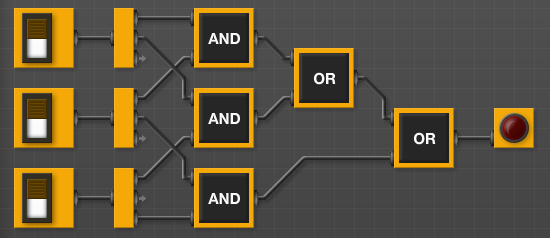
Save your expression to a text file. See Lab 4 for the format for submitting logical expressions to Gradescope.
- Due Date: 16 October Reading: Think CS: Chapters 7 & 8.10 & Datacamp Numpy Tutorial
Modify the map-mapking program from Lab 3 to create a topographic map (highlighting the points that have elevations that are multiples of 10). Your program should ask the user for the amount of blue (a floating point number between 0.0 and 1.0), the name of the output imagee, create a new image with thaht name and with the pixels colored as follows:
- If the elevation is less than or equal to 0, color the pixel the amount blue the user specified (and 0% red and 0% green).
- If the elevation is divisible by 10, color the pixel black (0% red, 0% green, and 0% blue).
- Otherwise, the pixel should be colored white (100% red, 100% green, and 100% blue).
A sample run of your program should look like:
How blue is the ocean: 0.5 What is the output file: medBlue.png Thank you for using my program! Your map is stored medBlue.png.
Your resulting map should look like:
and be saved to a file called medBlue.png.
Note: before submitting your program for grading, remove the commands that show the image (i.e. the ones that pop up the graphics window with the image). The program is graded on a server on the cloud and does not have a graphics window, so, the plt.show() and plt.imshow() commands will give an error. Instead, the files your program produces are compared pixel-by-pixel to the answer to check for correctness.
- Due Date: 17 October Reading: Burch's Logic & Circuits
Build a circuit that has the same behavior as a NAND gate (i.e. for the same inputs, gives identical output) using only AND, OR, and NOT gates.
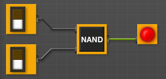
Save your expression to a text file. See Lab 4 for the format for submitting logical expressions to Gradescope.
- Due Date: 18 October Reading: 10-mins to Pandas, DataCamp Pandas
Modify the program from Lab 5 that displays the NYC historical population data. Your program should ask the user for the borough, an name for the output file, and then display the fraction of the population that has lived in that borough, over time.
A sample run of the program:
Enter borough name: Queens Enter output file name: qFraction.png
The file qFraction.png:
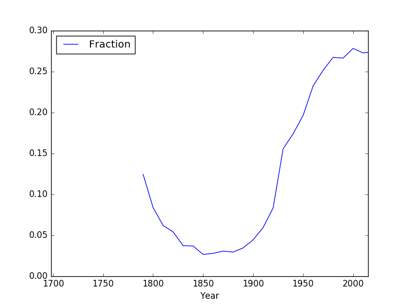
Note: before submitting your program for grading, remove the commands that show the image (i.e. the ones that pop up the graphics window with the image). The program is graded on a server on the cloud and does not have a graphics window, so, the plt.show() and plt.imshow() commands will give an error. Instead, the files your program produces are compared pixel-by-pixel to the answer to check for correctness.
- Due Date: 21 October Reading: 10-mins to Pandas, DataCamp Pandas
Write a program that computes the minimum, average, and maximum population over time for a borough (entered by the user). Your program should assume that the NYC historical population data file, nycHistPop.csv is in the same directory.
A sample run of your program:
Enter borough: Staten Island Minimum population: 727 Average population: 139814.23076923078 Maximum population: 474558
and another run:
Enter borough: Brooklyn Minimum population: 2017 Average population: 1252437.5384615385 Maximum population: 2738175
Hint: See Lab 5.
- Due Date: 22 October Reading: Ubuntu Terminal Reference Sheet
Write an Unix shell script that prints Hello, World to the screen.
Submit a single text file containing your shell commands. See Lab 5 for details.
- Due Date: 23 October Reading: Github Guide
In Lab 5, you created a github account. Submit a text file with the name of your account. The grading script is expecting a file with the format:
#Name: Your name #Date: November 2017 #Account name for my github account AccountNameGoesHere
Note: it takes a few minutes for a newly created github account to be visible. If you submit to gradescope and get a message that the account doesn't exist, wait a few minutes and try again.
- Due Date: 24 October Reading: Think CS: Chapter 7
The program, turtleString.py (available at: https://github.com/stjohn/csci127) takes a string as input and uses that string to control what the turtle draws on the screen (inspired by code.org's graph paper programming). Currently, the program processes the following commands:
- 'F': moves the turtle forward 50 steps
- 'L': turns the turtle 90 degrees to the left
- 'R': turns the turtle 90 degrees to the right
- '^': lifts the pen
- 'v': lowers the pen
- 'B': moves the turtle backwards 50 steps
- 'r': change turle color to red
- 'g': change turle color to green
- 'b': change turle color toblue
Modify this program to allow the user also to specify with the following symbols:
- 'S': makes the turtle stamp
- 'l': turns the turle 45 degrees to the left
- 'r': turns the turtle 45 degrees to the right
- 'p': change the turtle color to purple
Hint: See Lecture 4 notes.
- Due Date: 25 October Reading: 10-mins to Pandas, DataCamp Pandas
Using pandas, write a program that asks the user for a recipe (in comma separated value (CSV) format), reads in the corresponding CSV file and prints out quantities and ingredients needed to make a double batch. Assume that the CSV files have the columns: "Amount", "Measurement", and "Ingredient".
For example if the CSV file, meringues.csv, contained:
Amount Measurement Ingredient 150 grams chocolate chips 4 whites of eggs .25 teaspoon vanilla .25 teaspoon cream of tartar A sample run of your program would be:
Enter recipe name: meringues.csv Double your recipe is: Amount Measurement Ingredient 0 300.0 grams chocolate chips 1 8.0 whites of eggs 2 0.5 teaspoon vanilla 3 0.5 teaspoon cream of tartar- Due Date: 28 October Reading: 10-mins to Pandas, DataCamp Pandas
Modify the program from Lab 6 that displays shelter population over time to:
- ask the user to specify the input file,
- ask the user to specify the output file,
- make a plot of the fraction of the total population that are children over time from the data in input file, and
- store the plot in the output file the user specified.
A sample run of the program:
Enter name of input file: DHS_2015_2016.csv Enter name of output file: dhsPlot.png
which produces an output:
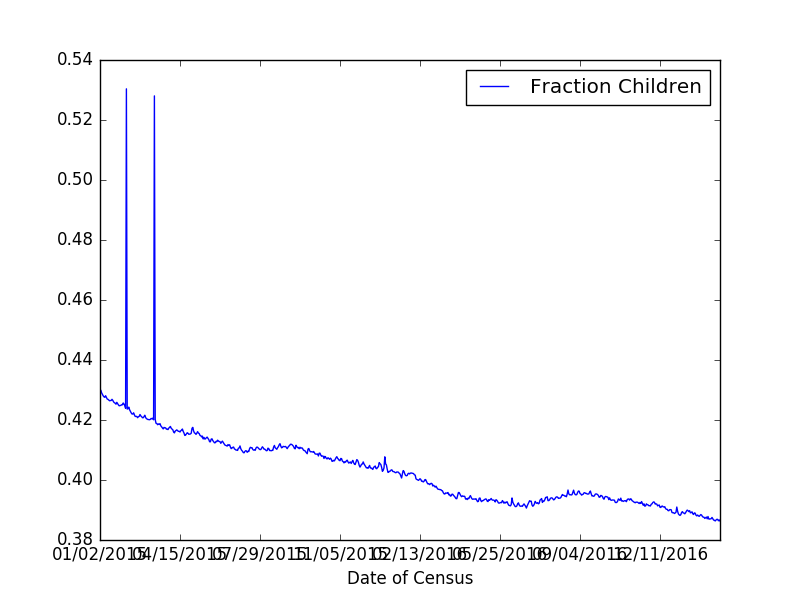
Note: The grading script is expecting that the label (i.e. name of your new column) is "Fraction Children".
- Due Date: 29 October Reading: Think CS Section 6.7
Write a program, using a function main() that prints "Hello, World!" to the screen. See Lab 6.
- Due Date: 30 October Reading: Burch's Logic & Circuits
Logical gates can be used to do arithmetic on binary numbers. For example, we can write a logical circuit whose output is one more than the inputted number. Our inputs are in1 and in2 and the outputs are stored in out1, out2, and out3.
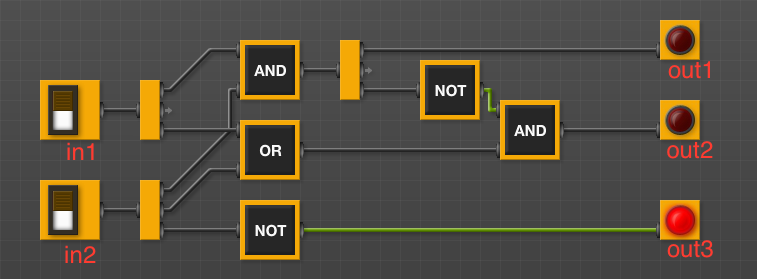
(click to launch new window with circuit)Here is a table of the inputs and outputs:
Inputs Outputs Decimal
Numberin1 in2 Decimal
Numberout1 out2 out3 0 0 0 1 0 0 1 1 0 1 2 0 1 0 2 1 0 3 0 1 1 3 1 1 4 1 0 0 Submit a text file with each of the outputs on a separate line:
#Name: YourNameHere #Date: November 2017 #Logical expressions for a 4-bit incrementer out1 = ... out2 = ... out3 = ...
Where "..." is replaced by your logical expression (see Lab 5).Note: here's a quick review of binary numbers.
More to come...
Here's xkcd on the simplicity of Python: (This file was last modified on 4 September 2019.)
(This file was last modified on 4 September 2019.)
- Due Date: 7 October Reading: Section 10.24